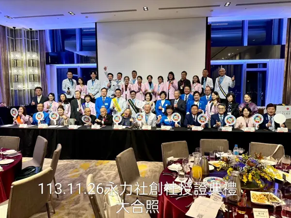

林學賢 CP
創社社長 · 價值場域建構者
建立永力扶輪社，把「社友的職業服務被看見」變成這個社存在的核心目的。
社區服務 社務服務
Rotary Club of Taipei Sustainable Impact
國際扶輪 3481 地區 台北永續影響力扶輪社，簡稱「永力社」，是一個以創造「永續影響力」為核心使命的新創扶輪社。每一位社友都以關注全球 ESG 的趨勢，並連結自己的產業發展目標，期盼能落實在職業、社務、服務與生活實踐中，為社區、社會與世界累積持恆的影響力。
2024 年成立於國際扶輪 3481 地區，台北永續影響力扶輪社（簡稱永力社）是以創造永續影響力為核心使命的新創扶輪社。每位社友關注全球 ESG 趨勢，連結自己的產業發展目標，期盼落實在職業、社務、服務與生活實踐中，為社區、社會與世界累積持恆的影響力。
扶輪以五大服務為哲學基石。其中職業服務是永力社最關注的，核心思考是「服務能否永續」。有些社友的本業就是社會服務（直接），也有社友的職業能間接創造社會價值。不論哪一種，當職業專業能持續為社會帶來價值，影響力就能不斷累積。永力社做的事，就是幫每位社友把這些職業服務統整起來，成為可被看見的社會貢獻。
本頁先列幹部（現任社長／前社長／下屆社長），點卡片進入完整人物誌；完整名單見下方按鈕。
創社與承接的核心軸線。
建立永力扶輪社，把「社友的職業服務被看見」變成這個社存在的核心目的。
把短期成果變成可被印刷、可被收藏、可被反覆翻閱的形式。
三十多年陪伴心智障礙青年走進職場、走進社區，讓他們有角色、有貢獻、有尊嚴。
在創社初期承接下一棒，因為相信永力社的方向值得被推下去。



從創社發起人會議一路到台北世界年會，54 場例會與活動、77 張照片與海報，依時間排好。
看全部例會與活動 →